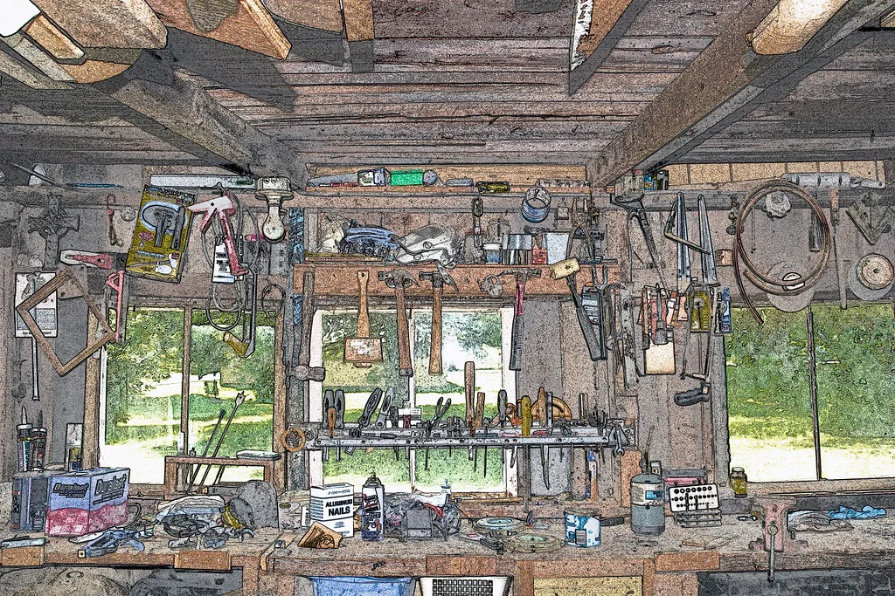
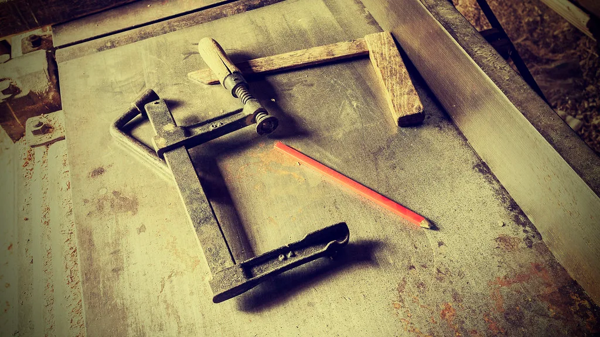
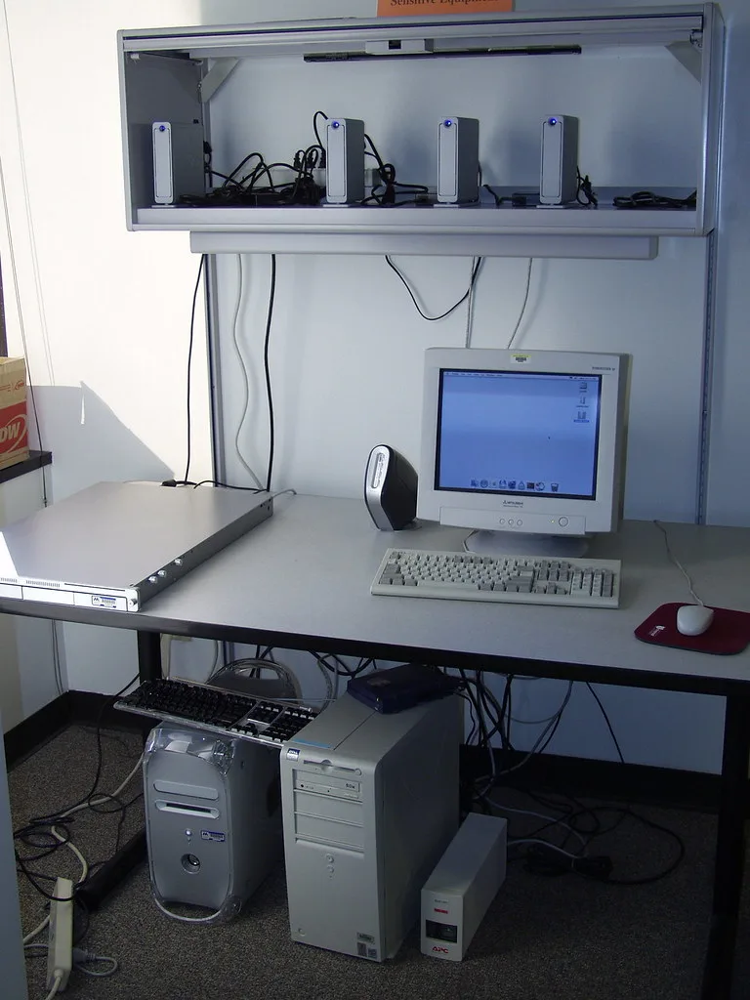

Atelier Mono
Home
Work
About
Contact
서리 의자 제작 과정
2022년 가을부터 2023년 봄까지 시제품을 아홉 번 만들어 지금 모양을 정했습니다.
재료
물푸레나무 · 라탄 · 무광 오일
증기 굽힘
등받이 나무를 90분 동안 쪄서 틀에 걸고 사흘 말립니다
짜맞춤
못 없이 장부로 다리와 좌판 틀을 연결합니다
라탄 엮기
좌판은 손으로 엮습니다. 한 장에 다섯 시간쯤 걸립니다
마감
무광 오일을 세 번 바르고 2주 동안 말립니다

제작 과정
스케치를 그리고 실물 크기 목업을 만든 다음 양산합니다
겨울 작업
‹
›

납품
포장과 배송도 직접 합니다
‹
›

포장을 마친 가구
‹
›
제작 문의
원하는 치수와 쓰임을 알려 주시면 도면부터 함께 정합니다.
제작 문의